EXPLODED VIEWS
¶ Here are some exploded views of different motorcycle Automatic Clutches and clutch parts for you to study. I will try to add more as time allows.
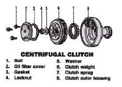 Honda 4TRX200SX Automatic Clutch |
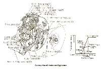 Honda CT-90 Automatic Clutch |
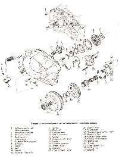 Honda 400 Torque Converter |
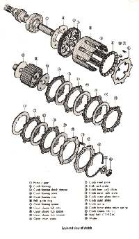 Suzuki M31, 55cc Automatic Clutch |
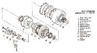 Suzuki LT125 Automatic Clutch |
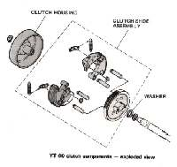 Yamaha YT60 Automatic Clutch |
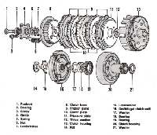 Yamaha YFM200 Automatic Clutch |
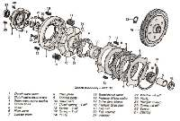 Honda ATC70 Automatic Clutch |
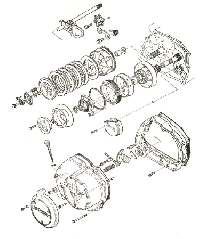 Honda 185 ATC Automatic Clutch |
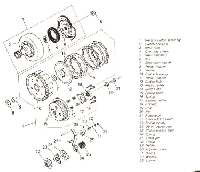 Kawasaki KLT 160 Automatic Clutch |
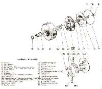 Puch Maxi Automatic Clutch |
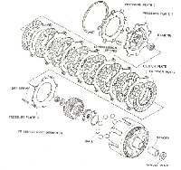 Yamaha YT125 Automatic Clutch |
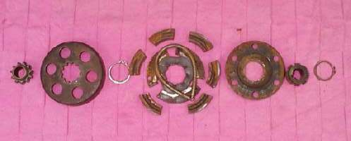 Standard Go-Cart Centrifugal Clutch |

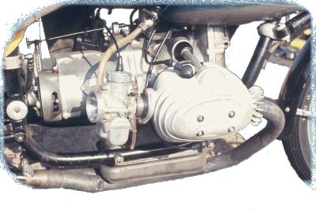 |
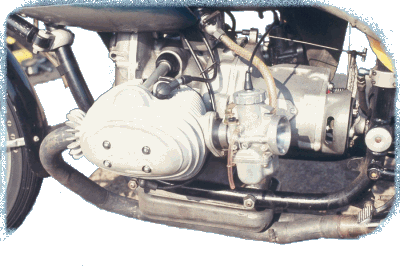 |
Copyright © 1999-2000 dansmc.com. All rights reserved.